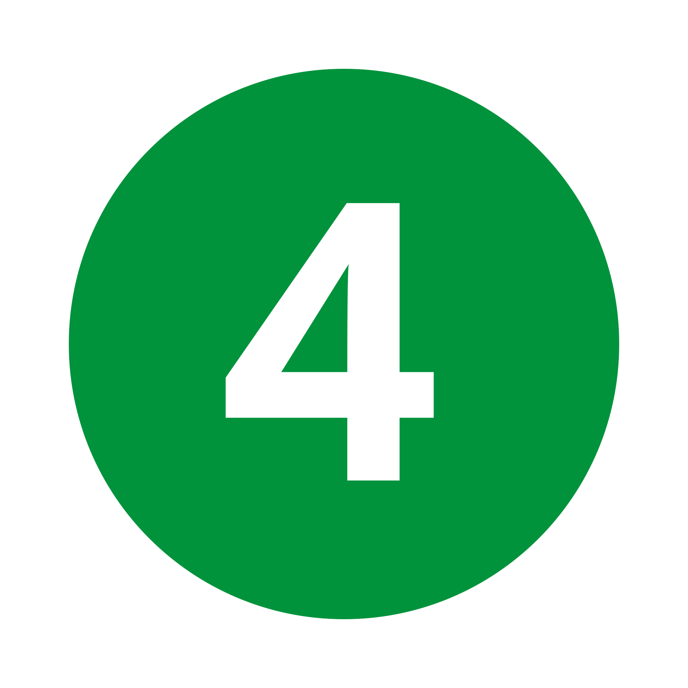
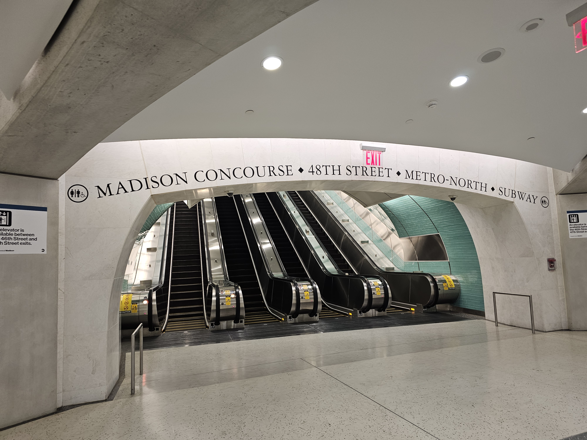

What Is Grand Central LIRR?
Planned as far back as the late 1960s, the MTA wanted to construct a way to allow Long Islanders to travel to the East Side without doubling back from into Penn Station, reduce train congestion at Penn Station, and increase train capacity systemwide on the LIRR. This was when a new terminal at Grand Central was thought of.
Using the unused lower level of the 63rd Street Tunnel (The upper level used by thetrain today) and digging a new tunnel west, then south to a big terminal spanning from 48th Street to 45th Street near Madison and Park Avenues, the MTA got to work and started constructing the terminal for the LIRR, connecting it to the original Grand Central Terminal used by Metro North and the subway (despite a entirely different look and location).
The MTA encountered many setbacks, including skyrocketing costs, old disputes with the Metro North, the 1975's fiscal crisis, political and construction issues, and many more setbacks that delayed this project many times, and increased the cost overtime.
Despite a very prolonged overdue, 12 Billion dollar construction period, it finally opened on January 25th, 2023, now called Grand Central Madison. This meant Grand Central allowed those traveling on the LIRR to access the East Side! This also opened various new connections, like the LIRR's sibling Metro North, the Lexington Avenue line , and many surrounding destinations like Rockefeller Center, Summit One Vanderbilt, etc.
While not as monstorous as its older, notoriously famous, grander brother, don't be fooled by Grand Central Madison. This new, modern complex contains 8 tracks and 4 platforms, 2 on each level. The lower 4 tracks and platforms are in the 301-304 range, while the upper level counterparts are numbered 201-204.
It contains gigantic escalator banks at the 45th, 46th, 47th, and 48th Streets areas, taking passengers from the mezzanine sandwiched between the 2 platform-sets, up to the concourse level. The main street exit lies at 47th Street, with 2 small to-street elevators at 44th and 48th Streets.

This is an example of an escalator bank at the station.
The to/from street elevators are hidden, so look for signs for them! The closest ones are at the 44th and 48th Street areas!
An elevator bank will also take you from the LIRR-platform mezzanine area to/from the concourse area.
Tip: To get to the mezzanine, go right near the Ticket booth area on the concourse level and you will find the elevator inside. If you're coming from the mezzanine, go towards the ticketing area, and you'll find the tucked elevator.
Here's a Video on how to access this elevator bank to get between the Concourse/Ticket area, and the mezzanine area where all the platforms are located. It also shows where to grab the 44th Street elevator! Credit: Jeremy Wilcox
Click here to watch the video: Grand Central Madison - Navigating The New Complex (Pt 2: Elevators)